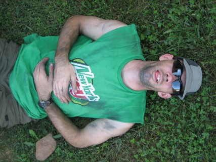
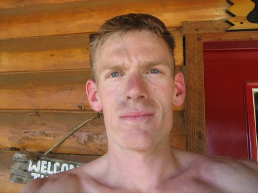
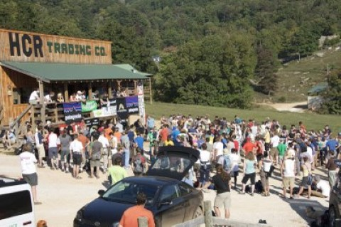
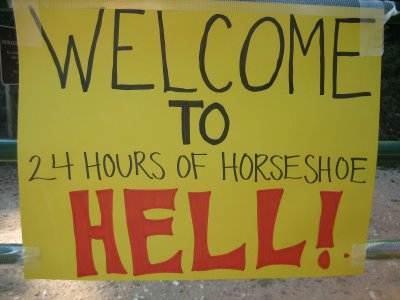

Family and climbers in my address book, I thought you might want to hear more about the 24 Hours of Horseshoe Hell climbing comp we did a couple weekends ago. It's a pretty unique event and it was way more fun than I expected, which is why I think it deserves an email. It took place in Horseshoe Canyon Ranch, a privately-owned ranch with hundreds of overbolted climbs on mostly bullet sandstone.
The basic idea of the comp is that you earn points for routes cleanly led. Teams are made of 2 climbers. Each team member earns points for the team if he leads a route and each lead also earns that team member individual points. So basically, there's no toproping going on because there's no points earned for it. If climber A leads 2 routes and climber B leads 1 route, the team would get points for 3 routes but climber A would get points for the 2 routes he did and his bro would get individual points for the 1 route he led. Routes can be repeated once, so we often led each route twice.
The real kicker is that there's a huge bonus (740 pts per climber--for reference, a 5.8 is worth 100 pts and a 5.11a is worth 200 pts) added to the score if both members climb at least one route in each of the 24 hours. It basically encourages you to climb all day and all night. Sweet.
Derick Miller, now-civilian, then AF captain and I teamed up. Our goal was 40 routes each (I do 15 routes on a normal "big day" in Arkansas), which we thought was ambitious, considering our poor climbing fitness level. Derick and I had both trained for the 100-mile bike ride in August and Derick had run the AF marathon about 2 weeks before the comp. Neither of us had trained much for climbing, but we thought we could at least climb easy stuff all night and get the bonus. We entered as intermediate climbers (5.9-5.10d)
The event turned out awesome. After about 10 hours of climbing, as I was racing up another well-bolted moderate, I thought, "Dude, this is exactly what I've always wanted to do...climb as much as possible and have everything else (eating, sleeping, talking about climbing) secondary to the act of climbing." I was finally completely justified in hurrying from route to route and not letting my partner eat, drink, or piss if it was time to belay me--I was in heaven.
We snacked the entire time between climbs and the 4-lb sandwich Derick's wife made for us lasted us most of the day and grabbed the attention of lots of other hungry climbers. In the end, we climbed 153 routes as a team in 24 hours...killing our 80-route goal. It was way easier on the body than I expected, although there were a few cramping forearms and glazed eyes at certain times. We had little trouble staying awake and our cache of food and 1 water run to camp was enough to fuel us through the 24 hours.
Highlights include Derick's hardest-ever flash of a steep 5.10c, Derick's constant "slower!" call as I lowered him at insane speeds into the darkness, and my loss of a Chaco sandal at 2 a.m. and the subsequent wandering among climbers asking, "Has anyone seen a right Choco sandal?...No, I'm not kidding." The sandal was later returned to me; it was found hanging in a tree. After the 24 hours, Derick was a bit disappointed at first because, as he put it, "It's not a good day of climbing unless you bleed." Alas, after much inspection, he found a small speck of blood on a tiny hang nail and we counted it...it had been a good day of climbing after all.
Luc
Attached is a night action photo and two post-24
hours photos.



The following pictures are from the 2008 trip he made with
Cassy as his climbing partner.
She won the women's beginner division that year - way to go Cassy!
We always knew she was a stud climber, now she has the award to prove
it.

This is a shot of the "general store" at the ranch. It is
usually such a sleepy,
relaxed place to visit - I'm glad Luc captured how it looked swamped
with
crazy climbers.
